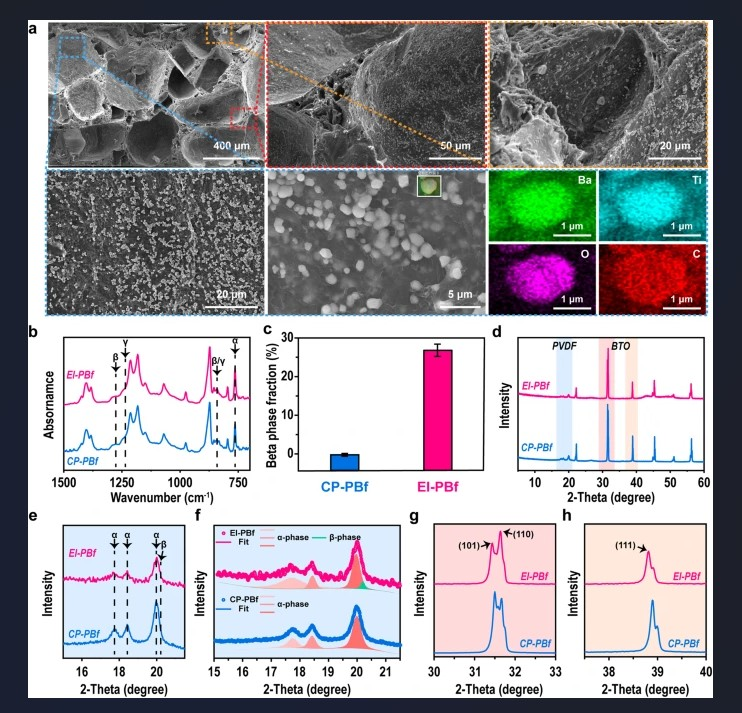

Self-poled Piezoelectric Polymer Composites via Melt-state Energy Implantation
Author: Ruchitha Koppula
Abstract:
It has been shown that electrical poling and piezoelectric ceramics may be essential components of a strategy
to improve the d33 of polymers. Nevertheless, this success was predicated on the large loading of ceramics
such as BTO (often greater than 30 wt%), which reduces the polymers' flexibility and lightweight.
Introduction:
The reverse piezoelectric effect may be utilized to convert the electrical signal input into mechanical
deformation, therefore acting as actuators. Polymers have notable benefits in terms of lightweight,
flexibility, and ease of processing when compared to traditional piezoelectric ceramics such as lead
zirconate titanate (PZT) and barium titanate (BTO).
Working:
As a result of their potent intrachain interactions with the PVDF molecules that create the spontaneous
polarization, fillers like MXene and carbon nanotubes were put into PVDF for self-poling following ink
printing onto devices in order to prevent electrical poling.

Properties:
- The overall workings and procedure of the piezoelectric effect, which is the ability of pressure to
cause a material to dilate and produce an electrical potential difference between its upward and
downward surfaces.
- THE AMOUNT OF CHARGE THAT IS TRANSFERRED BETWEEN TWO ELECTRODES ON EITHER SURFACE OF PBFS IN RESPONSE
TO PRESSURE.
Result:
A three-step procedure including melt-blending, compression molding, and salt leaching was used to create
the PBFs. To get a fine distribution and dispersion of BTO and NaCl in the PVDF matrix, weighted PVDF,
BTO, and NaCl (21:9:70 wt%) were first melt mixed at 195 o C using a Brabender mixer.
Addundum:
1. Colors: I've opted for two contrasting pastel grey shades. The lighter shade is used for the background and title, which emphasizes the title
against the darker background. The darker shade is chosen for the headings and paragraphs to ensure clear visibility on the lighter background.
2. Font: Handwritten fonts were meticulously chosen for this webpage to evoke a sense of personality and charm. By incorporating these fonts,
the page exudes a unique and inviting aesthetic, capturing the attention of visitors and encouraging them to engage with the content.
3. Borders: The meticulous application of varying borders, with curved edges and no pixels except on the left side, imbues the title with a dynamic,
pointer-like effect, elevating its visual impact and guiding the viewer's focus effortlessly.